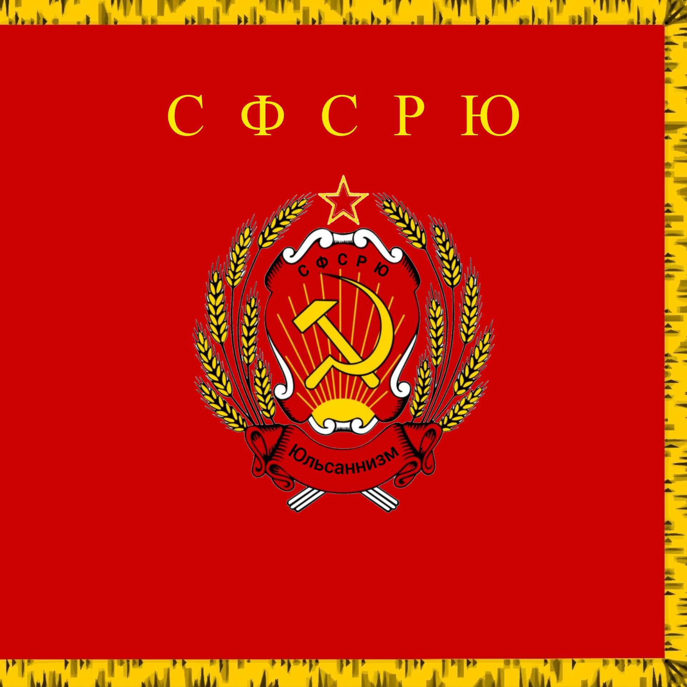

- СФСР Юльсанна – есть демократическо-коммунистическое федеративное правовое государство с республиканской формой правления.
- Наименования Советская Федеративная Социалистическая Республика Юльсанна и Советская Федеративная Социалистическая Республика Ульсанна равнозначны.
- Допускается использование сокращений «СФСР Юльсанна», «СФСР Ульсанна», «СФСРЮ», «СФСРУ».
КОНСТИТУЦИЯ
СОВЕТСКОЙ ФЕДЕРАТИВНОЙ СОЦИАЛИСТИЧЕСКОЙ РЕСПУБЛИКИ ЮЛЬСАННА
Полная официальная редакция
Принята Всенародным голосованием 14 августа 2025 года
Оглавление
- Преамбула
- Глава I. Основы конституционного строя
- Глава II. Права и свободы человека, гражданина и подданного
- Глава III. Федеративное устройство
- Глава IV. Президент СФСРЮ
- Глава V. Совет Федерации
- Глава VI. Правительство СФСРЮ
- Глава VII. Судебная власть и прокуратура
- Глава VIII. Местное самоуправление
- Глава IX. Конституционные поправки и пересмотр Конституции
- Раздел II. Заключительные и переходные положения
- Приложения
Преамбула
Мы, многонациональный народ Советской Федеративной Социалистической Республики Юльсанна,
соединённые общей судьбой на своей земле,
сохраняя историческое единство государства, сложившееся в веках,
утверждая права и свободы человека, гражданский мир и согласие,
возрождая суверенную государственность и утверждая незыблемость демократической основы,
стремясь обеспечить благополучие и процветание Отечества,
исходя из ответственности за свою Родину перед нынешним и будущими поколениями,
признавая себя частью мирового сообщества,
принимаем КОНСТИТУЦИЮ СОВЕТСКОЙ ФЕДЕРАТИВНОЙ СОЦИАЛИСТИЧЕСКОЙ РЕСПУБЛИКИ ЮЛЬСАННА.
ГЛАВА I. ОСНОВЫ КОНСТИТУЦИОННОГО СТРОЯ
- Носителем суверенитета и единственным источником власти является народ.
- Народ осуществляет свою власть непосредственно, а также через свободные выборы и референдумы.
- Территория СФСР Юльсанна едина и неприкосновенна.
- Суверенитет СФСР Юльсанна распространяется на всю её территорию.
- Конституция и федеральные законы имеют высшую силу и верховенство на всей территории Советской Федеративной Социалистической Республикой Юльсанна.
- Советская Федеративная Социалистическая Республика Юльсанна состоит из республик, краёв, областей, городов федерального значения, автономной области, Автономными республиками, федеративной республики и империи.
- Республика, автономная республика, федеративная республика и империя имеет свою конституцию и законодательство. Край, область, город федерального значения и автономная область имеет свой устав и законодательство.
- Федеративное устройство Советской Федеративной Социалистической Республикой Юльсанна основано на ее государственной целостности, единстве системы государственной власти, разграничении предметов ведения и полномочий между органами государственной власти Советской Федеративной Социалистической Республикой Юльсанна и органами государственной власти субъектов Советской Федеративной Социалистической Республикой Юльсанна, равноправии и самоопределении народов в Советской Федеративной Социалистической Республикой Юльсанна.
- Во взаимоотношениях с федеральными органами государственной власти все субъекты Советской Федеративной Социалистической Республикой Юльсанна между собой равноправны.
- Гражданство Советской Федеративной Социалистической Республикой Юльсанна приобретается и прекращается в соответствии с федеральным законом, является единым и равным независимо от оснований приобретения.
- Каждый гражданин Советской Федеративной Социалистической Республикой Юльсанна обладает на ее территории всеми правами и свободами и несет равные обязанности, предусмотренные Конституцией Советской Федеративной Социалистической Республикой Юльсанна.
- Гражданин Советской Федеративной Социалистической Республикой Юльсанна может быть лишен своего гражданства в соответствии с федеральным законом.
- Гражданин(поданный) Советской Федеративной Социалистической Республикой Юльсанна может добровольно выйти из гражданства(подданства) Советской Федеративной Социалистической Республикой Юльсанна.
- Советская Федеративная Социалистическая Республика Юльсанна — социальное государство, политика которого направлена на создание условий, обеспечивающих достойную жизнь и свободное развитие человека.
- В Советской Федеративной Социалистической Республикой Юльсанна охраняются труд и здоровье людей, устанавливается гарантированный минимальный размер оплаты труда, обеспечивается государственная поддержка семьи, материнства, отцовства и детства, инвалидов и пожилых граждан, развивается система социальных служб, устанавливаются государственные пенсии, пособия и иные гарантии социальной защиты.
- В Советской Федеративной Социалистической Республикой Юльсанна гарантируются единство экономического пространства, свободное перемещение товаров, услуг и финансовых средств, поддержка конкуренции, свобода экономической деятельности.
- В Советской Федеративной Социалистической Республикой Юльсанна признаются и защищаются равным образом частная, государственная, муниципальная и иные формы собственности.
- Земля и другие природные ресурсы используются и охраняются в Советской Федеративной Социалистической Республикой Юльсанна как основа жизни и деятельности народов, проживающих на соответствующей территории.
- Земля и другие природные ресурсы могут находиться в частной, государственной, муниципальной и иных формах собственности.
- Государственную власть в Советской Федеративной Социалистической Республикой Юльсанна осуществляют Президент Советской Федеративной Социалистической Республикой Юльсанна, Совет Федерации, правительство Советской Федеративной Социалистической Республикой Юльсанна, суды Советской Федеративной Социалистической Республикой Юльсанна.
- Государственную власть в субъектах Советской Федеративной Социалистической Республикой Юльсанна осуществляют образуемые ими органы государственной власти.
- В Советской Федеративной Социалистической Республикой Юльсанна признается идеологическое многообразие.
- Никакая идеология не может устанавливаться в качестве государственной или обязательной.
- В Советской Федеративной Социалистической Республикой Юльсанна признаются политическое многообразие, многопартийность.
- Общественные объединения равны перед законом.
- Запрещается создание и деятельность общественных объединений, цели или действия которых направлены на насильственное изменение основ конституционного строя и нарушение целостности Советской Федеративной Социалистической Республикой Юльсанна, подрыв безопасности государства, создание вооруженных формирований, разжигание социальной, расовой, национальной и религиозной розни.
- Религия Советской Федеративной Социалистической Республикой Юльсанна – Юльсаннизм.
- Допускается свободное вероисповедание иных религий.
- Религиозные объединения отделены от государства и равны перед законом.
- Конституция Советской Федеративной Социалистической Республикой Юльсанна имеет высшую юридическую силу, прямое действие и применяется на всей территории Советской Федеративной Социалистической Республикой Юльсанна. Законы и иные правовые акты, принимаемые в Советской Федеративной Социалистической Республикой Юльсанна, не должны противоречить Конституции Советской Федеративной Социалистической Республикой Юльсанна.
- Органы государственной власти, органы местного самоуправления, должностные лица, граждане и их объединения обязаны соблюдать Конституцию Советской Федеративной Социалистической Республикой Юльсанна и законы.
- Законы подлежат официальному опубликованию. Неопубликованные законы не применяются. Любые нормативные правовые акты, затрагивающие права, свободы и обязанности человека и гражданина, не могут применяться, если они не опубликованы официально для всеобщего сведения.
- Общепризнанные принципы и нормы международного права и международные договоры Советской Федеративной Социалистической Республикой Юльсанна являются составной частью ее правовой системы. Если международным договором Советской Федеративной Социалистической Республикой Юльсанна установлены иные правила, чем предусмотренные законом, то применяются правила международного договора.
- Положения настоящей главы Конституции составляют основы конституционного строя Советской Федеративной Социалистической Республикой Юльсанна и не могут быть изменены иначе как в порядке, установленном настоящей Конституцией.
- Никакие другие положения настоящей Конституции не могут противоречить основам конституционного строя Советской Федеративной Социалистической Республикой Юльсанна.
ГЛАВА II. ПРАВА И СВОБОДЫ ЧЕЛОВЕКА, ГРАЖДАНИНА И ПОДАННОГО
- В Советской Федеративной Социалистической Республикой Юльсанна признаются и гарантируются права и свободы человека и гражданина согласно общепризнанным принципам и нормам международного права и в соответствии с настоящей Конституцией.
- Основные права и свободы человека неотчуждаемы и принадлежат каждому от рождения.
- Осуществление прав и свобод человека и гражданина не должно нарушать права и свободы других лиц.
- Права и свободы человека и гражданина являются непосредственно действующими. Они определяют смысл, содержание и применение законов, деятельность законодательной и исполнительной власти, местного самоуправления и обеспечиваются правосудием.
- Все равны перед законом и судом.
- Государство гарантирует равенство прав и свобод человека и гражданина независимо от пола, расы, национальности, языка, происхождения, имущественного и должностного положения, места жительства, отношения к религии, убеждений, принадлежности к общественным объединениям, а также других обстоятельств. Запрещаются любые формы ограничения прав граждан по признакам социальной, расовой, национальной, языковой или религиозной принадлежности.
- Мужчина и женщина имеют равные права и свободы и равные возможности для их реализации.
- Каждый имеет право на жизнь.
- Достоинство личности охраняется государством. Ничто не может быть основанием для его умаления.
- Никто не должен подвергаться пыткам, насилию, другому жестокому или унижающему человеческое достоинство обращению или наказанию. Никто не может быть без добровольного согласия подвергнут медицинским, научным или иным опытам.
- Каждый имеет право на свободу и личную неприкосновенность.
- Арест, заключение под стражу и содержание под стражей допускаются только по судебному решению. До судебного решения лицо не может быть подвергнуто задержанию на срок более 48 часов.
- Каждый имеет право на неприкосновенность частной жизни, личную и семейную тайну, защиту своей чести и доброго имени.
- Каждый имеет право на тайну переписки, телефонных переговоров, почтовых, телеграфных и иных сообщений. Ограничение этого права допускается только на основании судебного решения.
- Сбор, хранение, использование и распространение информации о частной жизни лица без его согласия не допускаются.
- Органы государственной власти и органы местного самоуправления, их должностные лица обязаны обеспечить каждому возможность ознакомления с документами и материалами, непосредственно затрагивающими его права и свободы, если иное не предусмотрено законом.
Жилище неприкосновенно. Никто не вправе проникать в жилище против воли проживающих в нем лиц иначе как в случаях, установленных федеральным законом, или на основании судебного решения.
- Каждый вправе определять и указывать свою национальную принадлежность. Никто не может быть принужден к определению и указанию своей национальной принадлежности.
- Каждый имеет право на пользование родным языком, на свободный выбор языка общения, воспитания, обучения и творчества.
- Каждому гарантируется свобода мысли и слова.
- Не допускаются пропаганда или агитация, возбуждающие социальную, расовую, национальную или религиозную ненависть и вражду. Запрещается пропаганда социального, расового, национального, религиозного или языкового превосходства.
- Никто не может быть принужден к выражению своих мнений и убеждений или отказу от них.
- Каждый имеет право свободно искать, получать, передавать, производить и распространять информацию любым законным способом. Перечень сведений, составляющих государственную тайну, определяется федеральным законом.
- Гарантируется свобода массовой информации. Цензура запрещается.
- Каждый имеет право на объединение, включая право создавать профессиональные союзы для защиты своих интересов. Свобода деятельности общественных объединений гарантируется.
- Никто не может быть принужден к вступлению в какое-либо объединение или пребыванию в нем.
- Граждане Советской Федеративной Социалистической Республикой Юльсанна имеют право участвовать в управлении делами государства как непосредственно, так и через своих представителей.
- Граждане Советской Федеративной Социалистической Республикой Юльсанна имеют право избирать и быть избранными в органы государственной власти и органы местного самоуправления, а также участвовать в референдуме.
- Не имеют права избирать и быть избранными граждане, признанные судом недееспособными, а также содержащиеся в местах лишения свободы по приговору суда.
- Граждане Советской Федеративной Социалистической Республикой Юльсанна имеют равный доступ к государственной службе.
- Граждане Советской Федеративной Социалистической Республикой Юльсанна имеют право участвовать в отправлении правосудия.
- Каждый имеет право на свободное использование своих способностей и имущества для предпринимательской и иной не запрещенной законом экономической деятельности.
- Не допускается экономическая деятельность, направленная на монополизацию и недобросовестную конкуренцию.
- Право частной собственности охраняется законом.
- Каждый вправе иметь имущество в собственности, владеть, пользоваться и распоряжаться им как единолично, так и совместно с другими лицами.
- Никто не может быть лишен своего имущества иначе как по решению суда. Принудительное отчуждение имущества для государственных нужд может быть произведено только при условии предварительного и равноценного возмещения.
- Право наследования гарантируется.
- Граждане, поданные и их объединения вправе иметь в частной собственности землю.
- Владение, пользование и распоряжение землей и другими природными ресурсами осуществляются их собственниками свободно, если это не наносит ущерба окружающей среде и не нарушает прав и законных интересов иных лиц.
- Труд свободен. Каждый имеет право свободно распоряжаться своими способностями к труду, выбирать род деятельности и профессию.
- Принудительный труд запрещен.
- Признается право на индивидуальные и коллективные трудовые споры с использованием установленных федеральным законом способов их разрешения, включая право на забастовку.
- Каждый имеет право на отдых. Работающему по трудовому договору гарантируются установленные федеральным законом продолжительность рабочего времени, выходные и праздничные дни, оплачиваемый ежегодный отпуск.
- Материнство и детство, семья находятся под защитой государства.
- Забота о детях, их воспитание — равное право и обязанность родителей.
- Трудоспособные дети, достигшие 18 лет, должны заботиться о нетрудоспособных родителях.
- Каждому гарантируется социальное обеспечение по возрасту, в случае болезни, инвалидности, потери кормильца, для воспитания детей и в иных случаях, установленных законом.
- Государственные пенсии и социальные пособия устанавливаются законом.
- Поощряются добровольное социальное страхование, создание дополнительных форм социального обеспечения и благотворительность.
- Каждый имеет право на жилище. Никто не может быть произвольно лишен жилища.
- Органы государственной власти и органы местного самоуправления поощряют жилищное строительство, создают условия для осуществления права на жилище.
- Малоимущим, иным указанным в законе гражданам, нуждающимся в жилище, оно предоставляется бесплатно или за доступную плату из государственных, муниципальных и других жилищных фондов в соответствии с установленными законом нормами.
- Каждый имеет право на охрану здоровья и медицинскую помощь. Медицинская помощь в государственных и муниципальных учреждениях здравоохранения оказывается гражданам бесплатно за счет средств соответствующего бюджета, страховых взносов, других поступлений.
- В Советской Федеративной Социалистической Республикой Юльсанна финансируются федеральные программы охраны и укрепления здоровья населения, принимаются меры по развитию государственной, муниципальной, частной систем здравоохранения, поощряется деятельность, способствующая укреплению здоровья человека, развитию физической культуры и спорта, экологическому и санитарно-эпидемиологическому благополучию.
- Сокрытие должностными лицами фактов и обстоятельств, создающих угрозу для жизни и здоровья людей, влечет за собой ответственность в соответствии с федеральным законом.
- Каждый имеет право на образование.
- Гарантируются общедоступность и бесплатность дошкольного, основного общего и среднего профессионального образования в государственных или муниципальных образовательных учреждениях и на предприятиях.
- Каждый вправе на конкурсной основе бесплатно получить высшее образование в государственном или муниципальном образовательном учреждении и на предприятии.
- Основное общее образование обязательно. Родители или лица, их заменяющие, обеспечивают получение детьми основного общего образования.
- Советская Федеративная Социалистическая Республика Юльсанна устанавливает федеральные государственные образовательные стандарты, поддерживает различные формы образования и самообразования.
- Каждому гарантируется свобода литературного, художественного, научного, технического и других видов творчества, преподавания. Интеллектуальная собственность охраняется законом.
- Каждый имеет право на участие в культурной жизни и пользование учреждениями культуры, на доступ к культурным ценностям.
- Каждый обязан заботиться о сохранении исторического и культурного наследия, беречь памятники истории и культуры.
- Государственная защита прав и свобод человека и гражданина в Советской Федеративной Социалистической Республикой Юльсанна гарантируется.
- Каждый вправе защищать свои права и свободы всеми способами, не запрещенными законом.
- Каждому гарантируется судебная защита его прав и свобод.
- Решения и действия (или бездействие) органов государственной власти, органов местного самоуправления, общественных объединений и должностных лиц могут быть обжалованы в суд.
- Каждый вправе в соответствии с международными договорами Советской Федеративной Социалистической Республикой Юльсанна обращаться в межгосударственные органы по защите прав и свобод человека, если исчерпаны все имеющиеся внутригосударственные средства правовой защиты.
- Никто не может быть лишен права на рассмотрение его дела в том суде и тем судьей, к подсудности которых оно отнесено законом.
- Обвиняемый в совершении преступления имеет право на рассмотрение его дела судом с участием присяжных заседателей в случаях, предусмотренных федеральным законом.
- Каждому гарантируется право на получение квалифицированной юридической помощи. В случаях, предусмотренных законом, юридическая помощь оказывается бесплатно.
- Каждый задержанный, заключенный под стражу, обвиняемый в совершении преступления имеет право пользоваться помощью адвоката (защитника) с момента соответственно задержания, заключения под стражу или предъявления обвинения.
- Каждый обвиняемый в совершении преступления считается невиновным, пока его виновность не будет доказана в предусмотренном федеральным законом порядке и установлена вступившим в законную силу приговором суда.
- Обвиняемый не обязан доказывать свою невиновность.
- Неустранимые сомнения в виновности лица толкуются в пользу обвиняемого.
- Никто не может быть повторно осужден за одно и то же преступление.
- При осуществлении правосудия не допускается использование доказательств, полученных с нарушением федерального закона.
- Каждый осужденный за преступление имеет право на пересмотр приговора вышестоящим судом в порядке, установленном федеральным законом, а также право просить о помиловании или смягчении наказания.
- Никто не обязан свидетельствовать против себя самого, своего супруга и близких родственников, круг которых определяется федеральным законом.
- Федеральным законом могут устанавливаться иные случаи освобождения от обязанности давать свидетельские показания.
- Закон, устанавливающий или отягчающий ответственность, обратной силы не имеет.
- Никто не может нести ответственность за деяние, которое в момент его совершения не признавалось правонарушением.
Права потерпевших от преступлений и злоупотреблений властью охраняются законом. Государство обеспечивает потерпевшим доступ к правосудию и компенсацию причиненного ущерба.
Каждый имеет право на возмещение государством вреда, причиненного незаконными действиями (или бездействием) органов государственной власти или их должностных лиц.
- Перечисление в Конституции Советской Федеративной Социалистической Республикой Юльсанна основных прав и свобод не должно толковаться как отрицание или умаление других общепризнанных прав и свобод человека и гражданина.
- В Советской Федеративной Социалистической Республикой Юльсанна не должны издаваться законы, отменяющие или умаляющие права и свободы человека и гражданина.
- Права и свободы человека и гражданина могут быть ограничены федеральным законом только в той мере, в какой это необходимо в целях защиты основ конституционного строя, нравственности, здоровья, прав и законных интересов других лиц, обеспечения обороны страны и безопасности государства.
- В условиях чрезвычайного положения для обеспечения безопасности граждан и защиты конституционного строя в соответствии с федеральным конституционным законом могут устанавливаться отдельные ограничения прав и свобод с указанием пределов и срока их действия.
- Чрезвычайное положение на всей территории Советской Федеративной Социалистической Республикой Юльсанна и в ее отдельных местностях может вводиться при наличии обстоятельств и в порядке, установленных федеральным конституционным законом.
- Не подлежат ограничению права и свободы, предусмотренные статьями 18 (части 1–4, 6, 8, 9), 19, 21, 33–37 Конституции Советской Федеративной Социалистической Республикой Юльсанна.
- Каждый обязан платить законно установленные налоги и сборы. Законы, устанавливающие новые налоги или ухудшающие положение налогоплательщиков, обратной силы не имеют.
- Каждый обязан сохранять природу и окружающую среду, бережно относиться к природным богатствам.
- Каждый обязан платить законно установленные налоги и сборы. Законы, устанавливающие новые налоги или ухудшающие положение налогоплательщиков, обратной силы не имеют.
- Каждый обязан сохранять природу и окружающую среду, бережно относиться к природным богатствам.
- Защита Отечества является долгом и обязанностью гражданина Советской Федеративной Социалистической Республикой Юльсанна.
- Гражданин Советской Федеративной Социалистической Республикой Юльсанна несет военную службу в соответствии с федеральным законом.
- Гражданин Советской Федеративной Социалистической Республикой Юльсанна в случае, если его убеждениям или вероисповеданию противоречит несение военной службы, а также в иных установленных федеральным законом случаях имеет право на замену ее альтернативной гражданской службой.
Гражданин Советской Федеративной Социалистической Республикой Юльсанна может самостоятельно осуществлять в полном объеме свои права и обязанности с 18 лет.
- Гражданин Советской Федеративной Социалистической Республикой Юльсанна не может быть выслан за пределы Советской Федеративной Социалистической Республикой Юльсанна или выдан другому государству.
- Советская Федеративная Социалистическая Республика Юльсанна гарантирует своим гражданам защиту и покровительство за ее пределами.
- Гражданин Советской Федеративной Социалистической Республикой Юльсанна может иметь гражданство иностранного государства (двойное гражданство) в соответствии с федеральным законом или международным договором Советской Федеративной Социалистической Республикой Юльсанна.
- Наличие у гражданина Советской Федеративной Социалистической Республикой Юльсанна гражданства иностранного государства не умаляет его прав и свобод и не освобождает от обязанностей, вытекающих из российского гражданства, если иное не предусмотрено федеральным законом или международным договором Советской Федеративной Социалистической Республикой Юльсанна.
- Иностранные граждане и лица без гражданства пользуются в Советской Федеративной Социалистической Республикой Юльсанна правами и несут обязанности наравне с гражданами Советской Федеративной Социалистической Республикой Юльсанна, кроме случаев, установленных федеральным законом или международным договором Советской Федеративной Социалистической Республикой Юльсанна.
- Советская Федеративная Социалистическая Республика Юльсанна предоставляет политическое убежище иностранным гражданам и лицам без гражданства в соответствии с общепризнанными нормами международного права.
- В Советской Федеративной Социалистической Республикой Юльсанна не допускается выдача другим государствам лиц, преследуемых за политические убеждения, а также за действия (или бездействие), не признаваемые в Советской Федеративной Социалистической Республикой Юльсанна преступлением. Выдача лиц, обвиняемых в совершении преступления, а также передача осужденных для отбывания наказания в других государствах осуществляются на основе федерального закона или международного договора Советской Федеративной Социалистической Республикой Юльсанна.
Положения настоящей главы составляют основы правового статуса личности в Советской Федеративной Социалистической Республикой Юльсанна и не могут быть изменены иначе как в порядке, установленном настоящей Конституцией.
ГЛАВА III. ФЕДЕРАТИВНОЕ УСТРОЙСТВО
- В составе Советской Федеративной Социалистической Республикой Юльсанна находятся субъекты Советской Федеративной Социалистической Республикой Юльсанна:
а. Республики: Республика Кам, Республика Маргаритка, Республика Марго, Зоринская республика, Республика Цыганестан;
б. Федеративная республика Боброва;
в. Автономные республики: Эйтингон, Натуральнова;
г. Области: Поповская область, Алёнкинская область;
д. Автономная Наташинская область;
е. Края: Черноморский край;
ж. Города федерального значения: Поповск, Алёнкин;
з. Бештинская Империя. - Принятие в Советскую Федеративную Социалистическую Республику Юльсанна и образование в её составе нового субъекта осуществляются в порядке, установленном федеральным конституционным законом.
- Статус республики, автономной республики и федеративной республики определяется Конституцией Советской Федеративной Социалистической Республикой Юльсанна и конституцией республики.
- Статус империи определяется Конституцией Советской Федеративной Социалистической Республикой Юльсанна и Основным сводом законов Империи.
- Статус края, области, города федерального значения, автономной области, автономной республики, федеративной республики, империи определяется Конституцией Советской Федеративной Социалистической Республикой Юльсанна и уставом края, области, города федерального значения, автономной области, автономного округа, принимаемым законодательным (представительным) органом соответствующего субъекта Советской Федеративной Социалистической Республикой Юльсанна.
- Статус субъекта Советской Федеративной Социалистической Республикой Юльсанна может быть изменен по взаимному согласию Советской Федеративной Социалистической Республикой Юльсанна и субъекта Советской Федеративной Социалистической Республикой Юльсанна в соответствии с федеральным конституционным законом.
- Территория Советской Федеративной Социалистической Республикой Юльсанна включает в себя территории ее субъектов, внутренние воды и территориальное море, воздушное пространство над ними. На территории Советской Федеративной Социалистической Республикой Юльсанна в соответствии с федеральным законом могут быть созданы федеральные территории. Организация публичной власти на федеральных территориях устанавливается указанным федеральным законом.
- Советская Федеративная Социалистическая Республика Юльсанна обладает суверенными правами и осуществляет юрисдикцию на континентальном шельфе и в исключительной экономической зоне Советской Федеративной Социалистической Республикой Юльсанна в порядке, определяемом федеральным законом и нормами международного права.
- Советская Федеративная Социалистическая Республика Юльсанна обеспечивает защиту своего суверенитета и территориальной целостности. Действия (за исключением делимитации, демаркации, редемаркации государственной границы Советской Федеративной Социалистической Республикой Юльсанна с сопредельными государствами), направленные на отчуждение части территории Советской Федеративной Социалистической Республикой Юльсанна, а также призывы к таким действиям не допускаются.
- Границы между субъектами Советской Федеративной Социалистической Республикой Юльсанна могут быть изменены с их взаимного согласия.
- Советская Федеративная Социалистическая Республика Юльсанна является правопреемником Союза независимых государств на своей территории, а также правопреемником (правопродолжателем) Союза независимых государств в отношении членства в международных организациях, их органах, участия в международных договорах, а также в отношении предусмотренных международными договорами обязательств и активов Союза независимых государств за пределами территории Советской Федеративной Социалистической Республикой Юльсанна.
- Советская Федеративная Социалистическая Республика Юльсанна чтит память защитников Отечества, обеспечивает защиту исторической правды. Умаление значения подвига народа при защите Отечества не допускается.
- Государственными языками Советской Федеративной Социалистической Республикой Юльсанна является русский и юльсанниский.
- Республики вправе устанавливать свои государственные языки. В органах государственной власти, органах местного самоуправления, государственных учреждениях республик они употребляются наряду с государственным языком Советской Федеративной Социалистической Республикой Юльсанна.
- Советская Федеративная Социалистическая Республика Юльсанна гарантирует всем ее народам право на сохранение родного языка, создание условий для его изучения и развития.
- Культура в Советской Федеративной Социалистической Республикой Юльсанна является уникальным наследием ее многонационального народа. Культура поддерживается и охраняется государством.
- Империи являются особыми государственно-территориальными образованиями в составе Советской Федеративной Социалистической Республикой Юльсанна, сохраняющими исторически сложившиеся формы правления и управления.
- Статус империи определяется Конституцией Советской Федеративной Социалистической Республикой Юльсанна, Договором о вхождении в состав Советской Федеративной Социалистической Республикой Юльсанна, Основным сводом законов Империи.
- Империи обладают правом сохранять собственные институты власти, учреждать особые награды и звания, сохранять традиционные формы собственности.
- Империи обязаны соблюдать Конституцию и федеральные законы.
- Законы империи не должны противоречить Конституции Советской Федеративной Социалистической Республикой Юльсанна и федеральным законам.
- Бештинская Империя обладает особым статусом в составе СФСР Юльсанна, определяемым Договором об входе в состав Советской Федеративной Социалистической Республикой Юльсанна от 25 марта 2025 года, Распоряжением Президента об особом статусе Бештинской Империи, Федеральным Конституционным законом №006 «О Бештинской Империи».
- Бештинская Империя имеет собственную императорскую династию, особый порядок престолонаследия, право на собственные вооружённые формирования, специальные экономические режимы.
- Бештинская Империя обязана соблюдать Конституцию Советской Федеративной Социалистической Республикой Юльсанна, участвовать в общефедеральных программах, проводить федеральные выборы и референдумы, выполнять международные обязательства Советской Федеративной Социалистической Республикой Юльсанна.
- Советская Федеративная Социалистическая Республика Юльсанна гарантирует неприкосновенность исторических границ империй, сохранение культурного наследия, финансовую поддержку особых программ развития.
- Империи обязаны участвовать в формировании федерального бюджета, соблюдать единое экономическое пространство.
- Государственные флаг, герб и гимн Советской Федеративной Социалистической Республикой Юльсанна, их описание и порядок официального использования устанавливаются федеральным конституционным законом.
- Столицей Советской Федеративной Социалистической Республикой Юльсанна является город Поповск. Статус столицы устанавливается федеральным законом. Местом постоянного пребывания отдельных федеральных органов государственной власти может быть другой город, определенный федеральным конституционным законом.
Вне пределов ведения Советской Федеративной Социалистической Республикой Юльсанна и полномочий Советской Федеративной Социалистической Республикой Юльсанна по предметам совместного ведения Советской Федеративной Социалистической Республикой Юльсанна и субъектов Советской Федеративной Социалистической Республикой Юльсанна субъекты Советской Федеративной Социалистической Республикой Юльсанна обладают всей полнотой государственной власти.
- На территории Советской Федеративной Социалистической Республикой Юльсанна не допускается установление таможенных границ, пошлин, сборов и каких-либо иных препятствий для свободного перемещения товаров, услуг и финансовых средств.
- Ограничения перемещения товаров и услуг могут вводиться в соответствии с федеральным законом, если это необходимо для обеспечения безопасности, защиты жизни и здоровья людей, охраны природы и культурных ценностей.
- Денежной единицей в Советской Федеративной Социалистической Республикой Юльсанна является рубль. Денежная эмиссия осуществляется исключительно Центральным банком Советской Федеративной Социалистической Республикой Юльсанна. Введение и эмиссия других денег в Советской Федеративной Социалистической Республикой Юльсанна не допускаются.
- Защита и обеспечение устойчивости рубля — основная функция Центрального банка Советской Федеративной Социалистической Республикой Юльсанна, которую он осуществляет независимо от других органов государственной власти.
- Система налогов, взимаемых в федеральный бюджет, и общие принципы налогообложения и сборов в Советской Федеративной Социалистической Республикой Юльсанна устанавливаются федеральным законом.
- Государственные займы выпускаются в порядке, определяемом федеральным законом, и размещаются на добровольной основе.
- Советская Федеративная Социалистическая Республика Юльсанна уважает труд граждан и обеспечивает защиту их прав. Государством гарантируется минимальный размер оплаты труда не менее величины прожиточного минимума трудоспособного населения в целом по Советской Федеративной Социалистической Республикой Юльсанна.
- В Советской Федеративной Социалистической Республикой Юльсанна формируется система пенсионного обеспечения граждан на основе принципов всеобщности, справедливости и солидарности поколений и поддерживается ее эффективное функционирование, а также осуществляется индексация пенсий не реже одного раза в год в порядке, установленном федеральным законом.
- В Советской Федеративной Социалистической Республикой Юльсанна в соответствии с федеральным законом гарантируются обязательное социальное страхование, адресная социальная поддержка граждан и индексация социальных пособий и иных социальных выплат.
- По предметам ведения Советской Федеративной Социалистической Республикой Юльсанна принимаются федеральные конституционные законы и федеральные законы, имеющие прямое действие на всей территории Советской Федеративной Социалистической Республикой Юльсанна.
- По предметам совместного ведения Советской Федеративной Социалистической Республикой Юльсанна и субъектов Советской Федеративной Социалистической Республикой Юльсанна издаются федеральные законы и принимаемые в соответствии с ними законы и иные нормативные правовые акты субъектов Советской Федеративной Социалистической Республикой Юльсанна.
- Федеральные законы не могут противоречить федеральным конституционным законам.
- Законы и иные нормативные правовые акты субъектов Советской Федеративной Социалистической Республикой Юльсанна не могут противоречить федеральным законам, принятым в соответствии с частями первой и второй настоящей статьи. В случае противоречия между федеральным законом и иным актом, изданным в Советской Федеративной Социалистической Республикой Юльсанна, действует федеральный закон.
- В случае противоречия между федеральным законом и нормативным правовым актом субъекта Советской Федеративной Социалистической Республикой Юльсанна, изданным в соответствии с частью четвертой настоящей статьи, действует нормативный правовой акт субъекта Советской Федеративной Социалистической Республикой Юльсанна.
- Система органов государственной власти субъектов Советской Федеративной Социалистической Республики Юльсанна устанавливается субъектами Советской Федеративной Социалистической Республики Юльсанна самостоятельно в соответствии с основами конституционного строя Советской Федеративной Социалистической Республикой Юльсанна и общими принципами организации представительных и исполнительных органов государственной власти, установленными федеральным законом.
- В пределах ведения Советской Федеративной Социалистической Республикой Юльсанна и полномочий Советской Федеративной Социалистической Республикой Юльсанна по предметам совместного ведения Советской Федеративной Социалистической Республикой Юльсанна и субъектов Советской Федеративной Социалистической Республикой Юльсанна федеральные органы исполнительной власти и органы исполнительной власти субъектов Советской Федеративной Социалистической Республикой Юльсанна образуют единую систему исполнительной власти в Советской Федеративной Социалистической Республикой Юльсанна.
- Высшим должностным лицом субъекта Советской Федеративной Социалистической Республикой Юльсанна (руководителем высшего исполнительного органа государственной власти субъекта Советской Федеративной Социалистической Республикой Юльсанна) может быть гражданин Советской Федеративной Социалистической Республикой Юльсанна, достигший 14 лет, постоянно проживающий в Советской Федеративной Социалистической Республикой Юльсанна. Федеральным законом могут быть установлены дополнительные требования к высшему должностному лицу субъекта Советской Федеративной Социалистической Республикой Юльсанна (руководителю высшего исполнительного органа государственной власти субъекта Советской Федеративной Социалистической Республикой Юльсанна).
- Президент Советской Федеративной Социалистической Республикой Юльсанна и Правительство Советской Федеративной Социалистической Республикой Юльсанна обеспечивают в соответствии с Конституцией Советской Федеративной Социалистической Республикой Юльсанна осуществление полномочий федеральной государственной власти на всей территории Советской Федеративной Социалистической Республикой Юльсанна.
- Руководителем федерального государственного органа может быть гражданин Советской Федеративной Социалистической Республикой Юльсанна, достигший 14 лет.
Советская Федеративная Социалистическая Республика Юльсанна принимает меры по поддержанию и укреплению международного мира и безопасности, обеспечению мирного сосуществования государств и народов, недопущению вмешательства во внутренние дела государства.
ГЛАВА IV. ПРЕЗИДЕНТ СОВЕТСКОЙ ФЕДЕРАТИВНОЙ СОЦИАЛИСТИЧЕСКОЙ РЕСПУБЛИКИ ЮЛЬСАННА
- Президент Советской Федеративной Социалистической Республикой Юльсанна является главой государства.
- Президент Советской Федеративной Социалистической Республикой Юльсанна является гарантом Конституции Советской Федеративной Социалистической Республикой Юльсанна, прав и свобод человека и гражданина. В установленном Конституцией Советской Федеративной Социалистической Республикой Юльсанна порядке он принимает меры по охране суверенитета Советской Федеративной Социалистической Республикой Юльсанна, ее независимости и государственной целостности, поддерживает гражданский мир и согласие в стране, обеспечивает согласованное функционирование и взаимодействие органов, входящих в единую систему публичной власти.
- Президент Советской Федеративной Социалистической Республикой Юльсанна в соответствии с Конституцией Советской Федеративной Социалистической Республикой Юльсанна и федеральными законами определяет основные направления внутренней и внешней политики государства.
- Президент Советской Федеративной Социалистической Республикой Юльсанна как глава государства представляет Российскую Федерацию внутри страны и в международных отношениях.
- Президент Советской Федеративной Социалистической Республикой Юльсанна избирается сроком на шесть месяцев гражданами Советской Федеративной Социалистической Республикой Юльсанна на основе всеобщего равного и прямого избирательного права при тайном голосовании.
- Президентом Советской Федеративной Социалистической Республикой Юльсанна может быть избран гражданин Советской Федеративной Социалистической Республикой Юльсанна не моложе 16 лет, постоянно проживающий в Советской Федеративной Социалистической Республикой Юльсанна не менее 16 лет. Требование к кандидату на должность Президента Советской Федеративной Социалистической Республикой Юльсанна об отсутствии у него гражданства иностранного государства не распространяется на граждан Советской Федеративной Социалистической Республикой Юльсанна, ранее имевших гражданство государства, которое было принято или часть которого была принята в Российскую Федерацию в соответствии с федеральным конституционным законом, и постоянно проживавших на территории принятого в Российскую Федерацию государства или территории принятой в Российскую Федерацию части государства.
- Порядок выборов Президента Советской Федеративной Социалистической Республикой Юльсанна определяется федеральным законом.
- При вступлении в должность Президент Советской Федеративной Социалистической Республикой Юльсанна приносит народу следующую присягу:
«Клянусь при осуществлении полномочий Президента Советской Федеративной Социалистической Республикой Юльсанна уважать и охранять права и свободы человека и гражданина, соблюдать и защищать Конституцию Советской Федеративной Социалистической Республикой Юльсанна, защищать суверенитет и независимость, безопасность и целостность государства, верно служить народу». - Присяга приносится в торжественной обстановке в присутствии сенаторов Советской Федеративной Социалистической Республикой Юльсанна, депутатов Совета Федерации и судей Конституционного Суда Советской Федеративной Социалистической Республикой Юльсанна.
Президент Советской Федеративной Социалистической Республикой Юльсанна:
а) Назначает Вице-президента Советской Федеративной Социалистической Республикой Юльсанна и освобождает его от должности;
б) Принимает отставку Вице-президента;
в) назначает Председателя Правительства Советской Федеративной Социалистической Республикой Юльсанна, кандидатура которого утверждена Советом Федерации по представлению Президента Советской Федеративной Социалистической Республикой Юльсанна, и освобождает Председателя Правительства Советской Федеративной Социалистической Республикой Юльсанна от должности;
г) осуществляет общее руководство Правительством Советской Федеративной Социалистической Республикой Юльсанна; вправе председательствовать на заседаниях Правительства Советской Федеративной Социалистической Республикой Юльсанна;
д) принимает решение об отставке Правительства Советской Федеративной Социалистической Республикой Юльсанна;
е) принимает отставку Председателя Правительства Советской Федеративной Социалистической Республикой Юльсанна, заместителей Председателя Правительства Советской Федеративной Социалистической Республикой Юльсанна, федеральных министров, а также руководителей федеральных органов исполнительной власти, руководство деятельностью которых осуществляет Президент Советской Федеративной Социалистической Республикой Юльсанна;
ж) назначает Председателя Совета Федерации, освобождает Председателя Совета Федерации от должности и принимает отставку Председателя Совета Федерации;
з) назначает Председателя Конституционного суда;
и) назначает Председателя и судей Верховного арбитражного суда;
к) назначает Председателя и судей Верховного суда;
л) освобождает от должности и принимает отставку судей Верховного суда, Верховного арбитражного суда и Конституционного суда;
м) Формирует Совет Безопасности;
н) формирует Администрацию Президента Советской Федеративной Социалистической Республикой Юльсанна в целях обеспечения реализации своих полномочий;
о) назначает и освобождает Представителей Советской Федеративной Социалистической Республикой Юльсанна за пределами Советской Федеративной Социалистической Республикой Юльсанна.
Президент Советской Федеративной Социалистической Республикой Юльсанна:
а) назначает выборы Совета Федерации в соответствии с Конституцией Советской Федеративной Социалистической Республикой Юльсанна и федеральным законом;
б) распускает Совет Федерации в случаях и порядке, предусмотренных Конституцией Советской Федеративной Социалистической Республикой Юльсанна;
в) назначает референдум в порядке, установленном федеральным конституционным законом;
г) вносит законопроекты в Совет Федерации;
д) подписывает и обнародует федеральные законы;
е) обращается к Совету Федерации с ежегодными посланиями о положении в стране, об основных направлениях внутренней и внешней политики государства.
- Президент Советской Федеративной Социалистической Республикой Юльсанна может использовать согласительные процедуры для разрешения разногласий между органами государственной власти Советской Федеративной Социалистической Республикой Юльсанна и органами государственной власти субъектов Советской Федеративной Социалистической Республикой Юльсанна, а также между органами государственной власти субъектов Советской Федеративной Социалистической Республикой Юльсанна. В случае недостижения согласованного решения он может передать разрешение спора на рассмотрение соответствующего суда.
- Президент Советской Федеративной Социалистической Республикой Юльсанна вправе приостанавливать действие актов органов исполнительной власти субъектов Советской Федеративной Социалистической Республикой Юльсанна в случае противоречия этих актов Конституции Советской Федеративной Социалистической Республикой Юльсанна и федеральным законам, международным обязательствам Советской Федеративной Социалистической Республикой Юльсанна или нарушения прав и свобод человека и гражданина до решения этого вопроса соответствующим судом.
Президент Советской Федеративной Социалистической Республикой Юльсанна:
а) осуществляет руководство внешней политикой Советской Федеративной Социалистической Республикой Юльсанна;
б) ведет переговоры и подписывает международные договоры Советской Федеративной Социалистической Республикой Юльсанна;
в) подписывает ратификационные грамоты;
г) принимает верительные и отзывные грамоты аккредитуемых при нем дипломатических представителей.
- Президент Советской Федеративной Социалистической Республикой Юльсанна является Верховным Главнокомандующим Вооруженными Силами Советской Федеративной Социалистической Республикой Юльсанна.
- В случае агрессии против Советской Федеративной Социалистической Республикой Юльсанна или непосредственной угрозы агрессии Президент Советской Федеративной Социалистической Республикой Юльсанна вводит на территории Советской Федеративной Социалистической Республикой Юльсанна или в отдельных ее местностях военное положение с незамедлительным сообщением об этом Совету Федерации.
- Режим военного положения определяется федеральным конституционным законом.
Президент Советской Федеративной Социалистической Республикой Юльсанна при обстоятельствах и в порядке, предусмотренных федеральным конституционным законом, вводит на территории Советской Федеративной Социалистической Республикой Юльсанна или в отдельных ее местностях чрезвычайное положение с незамедлительным сообщением об этом Совету Федерации.
Президент Советской Федеративной Социалистической Республикой Юльсанна:
а) решает вопросы гражданства Советской Федеративной Социалистической Республикой Юльсанна и предоставления политического убежища;
б) награждает государственными наградами Советской Федеративной Социалистической Республикой Юльсанна, присваивает почетные звания Советской Федеративной Социалистической Республикой Юльсанна, высшие воинские и высшие специальные звания;
в) осуществляет помилование.
- Президент Советской Федеративной Социалистической Республикой Юльсанна издает указы и распоряжения.
- Указы и распоряжения Президента Советской Федеративной Социалистической Республикой Юльсанна обязательны для исполнения на всей территории Советской Федеративной Социалистической Республикой Юльсанна.
- Указы и распоряжения Президента Советской Федеративной Социалистической Республикой Юльсанна не должны противоречить Конституции Советской Федеративной Социалистической Республикой Юльсанна и федеральным законам.
Президент Советской Федеративной Социалистической Республикой Юльсанна обладает неприкосновенностью.
- Президент Советской Федеративной Социалистической Республикой Юльсанна приступает к исполнению полномочий с момента принесения им присяги и прекращает их исполнение с истечением срока его пребывания в должности с момента принесения присяги вновь избранным Президентом Советской Федеративной Социалистической Республикой Юльсанна.
- Президент Советской Федеративной Социалистической Республикой Юльсанна прекращает исполнение полномочий досрочно в случае его отставки, стойкой неспособности по состоянию здоровья осуществлять принадлежащие ему полномочия или отрешения от должности. При этом на его должность вступает Вице-президент, должность Вице-президента остается вакантной.
- Во всех случаях, когда Президент Советской Федеративной Социалистической Республикой Юльсанна не в состоянии выполнять свои обязанности, их временно исполняет Вице-президент Советской Федеративной Социалистической Республикой Юльсанна. Исполняющий обязанности Президента Советской Федеративной Социалистической Республикой Юльсанна не имеет права распускать Совет Федерации, назначать референдум, а также вносить предложения о поправках и пересмотре положений Конституции Советской Федеративной Социалистической Республикой Юльсанна.
ГЛАВА V. СОВЕТ ФЕДЕРАЦИИ
- Совет Федерации — парламент Советской Федеративной Социалистической Республики Юльсанна — является представительным и законодательным органом Советской Федеративной Социалистической Республики Юльсанна.
- Совет Федерации состоит из одной палаты.
- Совет Федерации состоит из депутатов Советской Федеративной Социалистической Республики Юльсанна.
- Общее число мест в Совете Федерации Советской Федеративной Социалистической Республики Юльсанна определяется исходя из числа представителей от субъектов Советской Федеративной Социалистической Республики Юльсанна, перечисленных в статье 48 Конституции Советской Федеративной Социалистической Республики Юльсанна.
- Депутатом Советской Федеративной Социалистической Республики Юльсанна может быть гражданин Советской Федеративной Социалистической Республики Юльсанна, достигший 14 лет, постоянно проживающий в Советской Федеративной Социалистической Республики Юльсанна.
- Совет Федерации избирается сроком на 6 месяцев, вместе с выборами Президента.
- Порядок формирования Совета Федерации и порядок выборов депутатов Совета Федерации устанавливаются федеральными законами.
- Депутаты Совета Федерации обладают неприкосновенностью в течение всего срока их полномочий. Они не могут быть задержаны, арестованы, подвергнуты обыску, кроме случаев задержания на месте преступления, а также подвергнуты личному досмотру, за исключением случаев, когда это предусмотрено федеральным законом для обеспечения безопасности других людей.
- Вопрос о лишении неприкосновенности решается по представлению Генерального прокурора Советской Федеративной Социалистической Республики Юльсанна Президентом.
- Совет Федерации собирается на первое заседание на третий день после избрания. Президент Советской Федеративной Социалистической Республики Юльсанна может созвать заседание Совета Федерации ранее этого срока.
- Первое заседание Совета Федерации открывает старейший по возрасту депутат.
- С момента начала работы Совета Федерации нового созыва полномочия Совета Федерации прежнего созыва прекращаются.
Заседания Совета Федерации являются открытыми.
- Совет Федерации избирает из своего состава Председателя Совета Федерации и его заместителей.
- Председатель Совета Федерации и его заместители ведут заседания и ведают внутренним распорядком палаты.
- Совет Федерации образуют комитеты и комиссии, проводят по вопросам своего ведения парламентские слушания.
- Совет Федерации принимает свой регламент и решает вопросы внутреннего распорядка своей деятельности.
- Совет Федерации является высшим законодательным органом.
- К ведению Совета Федерации относятся:
а) Утверждение новых законодательных актов;
б) Утверждение федеральных законов;
в) Назначение выборов Президента и Вице-президента Советской Федеративной Социалистической Республики Юльсанна;
г) Принятие отставки от Президента и Вице-президента;
д) Отрешение от должности Президента и Вице-президента.
- Законопроекты вносятся в Совет Федерации.
- Законопроекты о введении или отмене налогов, освобождении от их уплаты, о выпуске государственных займов, об изменении финансовых обязательств государства, другие законопроекты, предусматривающие расходы, покрываемые за счет федерального бюджета, могут быть внесены только при наличии заключения Правительства Советской Федеративной Социалистической Республики Юльсанна.
- Федеральные законы принимаются Президентом и Вице-президентом.
- Федеральные законы принимаются большинством голосов от общего числа депутатов Совета Федерации, если иное не предусмотрено Конституцией Советской Федеративной Социалистической Республики Юльсанна.
- Принятые Советом Федерации федеральные законы в течение пяти дней передаются на рассмотрение Президенту и Вице-президенту для подписания и обнародования.
- Федеральный закон считается принятым, если он был принят Советом Федерации и подписан Президентом и Вице-президентом.
- Президент имеет право наложить вето на федеральный закон.
- Наложить вето на федеральный конституционный закон имеет право только Совет Федерации.
- Президент вправе созвать Конституционный совет для рассмотрения и решения об аннулировании федерального конституционного закона.
- Народ Советской Федеративной Социалистической Республики Юльсанна имеет право назначить референдум об отмене того или иного закона.
Президент Советской Федеративной Социалистической Республики Юльсанна в течение четырнадцати дней подписывает федеральный закон и обнародует его.
- Федеральные конституционные законы принимаются по вопросам, предусмотренным Конституцией Советской Федеративной Социалистической Республики Юльсанна.
- Федеральные конституционные законы принимаются ¾ голосов от общего количества числа депутатов Совета Федерации.
- Президент может обратиться в Конституционный суд для проверки конституционности федерального конституционного закона.
- Совет Федерации может быть распущен Президентом Советской Федеративной Социалистической Республики Юльсанна в случаях, предусмотренных статьями 91 и 95 Конституции Советской Федеративной Социалистической Республики Юльсанна.
- В случае роспуска Совета Федерации Президент Советской Федеративной Социалистической Республики Юльсанна назначает дату выборов с тем, чтобы вновь избранный Совет Федерации собрался не позднее чем через 3 недели с момента роспуска.
- Совет Федерации не может быть распущен по основаниям, предусмотренным статьей 117 Конституции Советской Федеративной Социалистической Республики Юльсанна, в течение 1 месяца после ее избрания.
- Совет Федерации не может быть распущен с момента выдвижения им обвинения против Президента Советской Федеративной Социалистической Республики Юльсанна до принятия соответствующего решения Верховным судом.
- Совет Федерации не может быть распущен в период действия на всей территории Советской Федеративной Социалистической Республики Юльсанна военного или чрезвычайного положения, а также в течение 2 недель до окончания срока полномочий Президента Советской Федеративной Социалистической Республики Юльсанна.
ГЛАВА VI. ПРАВИТЕЛЬСТВО СОВЕТСКОЙ ФЕДЕРАТИВНОЙ СОЦИАЛИСТИЧЕСКОЙ РЕСПУБЛИКИ ЮЛЬСАННА
- Исполнительную власть Советской Федеративной Социалистической Республики Юльсанна осуществляет Правительство Советской Федеративной Социалистической Республики Юльсанна под общим руководством Президента Советской Федеративной Социалистической Республики Юльсанна.
- Правительство Советской Федеративной Социалистической Республики Юльсанна состоит из Председателя Правительства Советской Федеративной Социалистической Республики Юльсанна, заместителей Председателя Правительства Советской Федеративной Социалистической Республики Юльсанна и федеральных министров.
- Правительство Советской Федеративной Социалистической Республики Юльсанна руководит деятельностью федеральных органов исполнительной власти, за исключением федеральных органов исполнительной власти, руководство деятельностью которых осуществляет Президент Советской Федеративной Социалистической Республики Юльсанна.
- Председателем Правительства Советской Федеративной Социалистической Республики Юльсанна, Заместителем Председателя Правительства Советской Федеративной Социалистической Республики Юльсанна, федеральным министром, иным руководителем федерального органа исполнительной власти может быть гражданин Советской Федеративной Социалистической Республики Юльсанна, достигший 12 лет.
Председатель Правительства Советской Федеративной Социалистической Республики Юльсанна назначается Президентом Советской Федеративной Социалистической Республики Юльсанна.
- Председатель Правительства Советской Федеративной Социалистической Республики Юльсанна не позднее недельного срока после назначения представляет Президенту Советской Федеративной Социалистической Республики Юльсанна предложения о структуре федеральных органов исполнительной власти, за исключением случая, когда предшествующий Председатель Правительства Советской Федеративной Социалистической Республики Юльсанна освобожден от должности Президентом Советской Федеративной Социалистической Республики Юльсанна.
- Председатель Правительства Советской Федеративной Социалистической Республики Юльсанна представляет Совету Федерации на утверждение кандидатуры заместителей Председателя Правительства Советской Федеративной Социалистической Республики Юльсанна и федеральных министров.
- Заместители Председателя Правительства Советской Федеративной Социалистической Республики Юльсанна и федеральные министры, кандидатуры которых утверждены Советом Федерации, назначаются на должность Президентом Советской Федеративной Социалистической Республики Юльсанна.
- После трехкратного отклонения Советом Федерации представленных в соответствии с частью 2 настоящей статьи кандидатур заместителей Председателя Правительства Советской Федеративной Социалистической Республики Юльсанна, федеральных министров Президент Советской Федеративной Социалистической Республики Юльсанна вправе назначить заместителей Председателя Правительства Советской Федеративной Социалистической Республики Юльсанна, федеральных министров из числа кандидатур, представленных Председателем Правительства Советской Федеративной Социалистической Республики Юльсанна. Если после трехкратного отклонения Советом Федерации представленных в соответствии с частью 2 настоящей статьи кандидатур более одной трети должностей членов Правительства Советской Федеративной Социалистической Республики Юльсанна остаются вакантными, Президент Советской Федеративной Социалистической Республики Юльсанна вправе распустить Государственную Думу и назначить новые выборы.
Председатель Правительства Советской Федеративной Социалистической Республики Юльсанна в соответствии с Конституцией Советской Федеративной Социалистической Республики Юльсанна, федеральными законами, указами, распоряжениями, поручениями Президента Советской Федеративной Социалистической Республики Юльсанна организует работу Правительства Советской Федеративной Социалистической Республики Юльсанна. Председатель Правительства Советской Федеративной Социалистической Республики Юльсанна несет персональную ответственность перед Президентом Советской Федеративной Социалистической Республики Юльсанна за осуществление возложенных на Правительство Советской Федеративной Социалистической Республики Юльсанна полномочий.
- На основании и во исполнение Конституции Советской Федеративной Социалистической Республики Юльсанна, федеральных законов, указов, распоряжений, поручений Президента Советской Федеративной Социалистической Республики Юльсанна Правительство Советской Федеративной Социалистической Республики Юльсанна издает постановления и распоряжения, обеспечивает их исполнение.
- Постановления и распоряжения Правительства Советской Федеративной Социалистической Республики Юльсанна обязательны к исполнению в Советской Федеративной Социалистической Республики Юльсанна.
- Постановления и распоряжения Правительства Советской Федеративной Социалистической Республики Юльсанна в случае их противоречия Конституции Советской Федеративной Социалистической Республики Юльсанна, федеральным законам, указам и распоряжениям Президента Советской Федеративной Социалистической Республики Юльсанна могут быть отменены Президентом Советской Федеративной Социалистической Республики Юльсанна.
Перед вновь избранным Президентом Советской Федеративной Социалистической Республики Юльсанна Правительство Советской Федеративной Социалистической Республики Юльсанна слагает свои полномочия.
- Правительство Советской Федеративной Социалистической Республики Юльсанна может подать в отставку, которая принимается или отклоняется Президентом Советской Федеративной Социалистической Республики Юльсанна.
- Президент Советской Федеративной Социалистической Республики Юльсанна может принять решение об отставке Правительства Советской Федеративной Социалистической Республики Юльсанна.
- Совет Федерации может выразить недоверие Правительству Советской Федеративной Социалистической Республики Юльсанна. Постановление о недоверии Правительству Советской Федеративной Социалистической Республики Юльсанна принимается большинством голосов от общего числа депутатов Совета Федерации. После выражения Советом Федерации недоверия Правительству Советской Федеративной Социалистической Республики Юльсанна Президент Советской Федеративной Социалистической Республики Юльсанна вправе объявить об отставке Правительства Советской Федеративной Социалистической Республики Юльсанна либо не согласиться с решением Совета Федерации. В случае если Совет Федерации в течение одного месяца повторно выразит недоверие Правительству Советской Федеративной Социалистической Республики Юльсанна, Президент Советской Федеративной Социалистической Республики Юльсанна объявляет об отставке Правительства Советской Федеративной Социалистической Республики Юльсанна либо распускает Совет Федерации и назначает новые выборы.
- Председатель Правительства Советской Федеративной Социалистической Республики Юльсанна вправе поставить перед Советом Федерации вопрос о доверии Правительству Советской Федеративной Социалистической Республики Юльсанна, который подлежит рассмотрению в течение семи дней. Если Совет Федерации отказывает в доверии Правительству Советской Федеративной Социалистической Республики Юльсанна, Президент Советской Федеративной Социалистической Республики Юльсанна в течение семи дней вправе принять решение об отставке Правительства Советской Федеративной Социалистической Республики Юльсанна или о роспуске Совета Федерации и назначении новых выборов. В случае если Правительство Советской Федеративной Социалистической Республики Юльсанна в течение одного месяца повторно поставит перед Советом Федерации вопрос о доверии, а Совет Федерации в доверии Правительству Советской Федеративной Социалистической Республики Юльсанна откажет, Президент Советской Федеративной Социалистической Республики Юльсанна принимает решение об отставке Правительства Советской Федеративной Социалистической Республики Юльсанна или о роспуске Совета Федерации и назначении новых выборов.
- Председатель Правительства Советской Федеративной Социалистической Республики Юльсанна, Заместитель Председателя Правительства Советской Федеративной Социалистической Республики Юльсанна, федеральный министр вправе подать в отставку, которая принимается или отклоняется Президентом Советской Федеративной Социалистической Республики Юльсанна.
- В случае отставки или сложения полномочий Правительство Советской Федеративной Социалистической Республики Юльсанна по поручению Президента Советской Федеративной Социалистической Республики Юльсанна продолжает действовать до сформирования нового Правительства Советской Федеративной Социалистической Республики Юльсанна. В случае освобождения от должности Президентом Советской Федеративной Социалистической Республики Юльсанна или отставки Председателя Правительства Советской Федеративной Социалистической Республики Юльсанна, Заместителя Председателя Правительства Советской Федеративной Социалистической Республики Юльсанна, федерального министра Президент Советской Федеративной Социалистической Республики Юльсанна вправе поручить этому лицу продолжать исполнять обязанности по должности или возложить их исполнение на другое лицо до соответствующего назначения.
- Совет Федерации не может выразить недоверие Правительству Советской Федеративной Социалистической Республики Юльсанна, а Председатель Правительства Советской Федеративной Социалистической Республики Юльсанна не может ставить перед Советом Федерации вопрос о доверии Правительству Советской Федеративной Социалистической Республики Юльсанна в случаях, предусмотренных частями 3 — 5 статьи 88 Конституции Советской Федеративной Социалистической Республики Юльсанна.
- Вице-президент Советской Федеративной Социалистической Республики Юльсанна является вторым высшим должностным лицом государства и заместителем Президента.
- Вице-президент Советской Федеративной Социалистической Республики Юльсанна входит в состав Совета Безопасности и Правительства Советской Федеративной Социалистической Республики Юльсанна по должности.
- Вице-президент Советской Федеративной Социалистической Республики Юльсанна избирается всенародным голосованием одновременно с Президентом Советской Федеративной Социалистической Республики Юльсанна сроком на 6 месяцев.
- Кандидат в Вице-президенты Советской Федеративной Социалистической Республики Юльсанна выдвигается вместе с кандидатом в Президенты Советской Федеративной Социалистической Республики Юльсанна в составе единого избирательного списка.
- Требования к кандидату соответствуют требованиям к кандидату в Президенты Советской Федеративной Социалистической Республики Юльсанна.
- Вице-президент Советской Федеративной Социалистической Республики Юльсанна:
а) осуществляет полномочия Президента в случаях его временного отсутствия;
б) координирует деятельность федеральных органов исполнительной власти;
в) возглавляет Государственную комиссию по вопросам федеративных отношений;
г) выполняет особые поручения Президента. - В случае досрочного прекращения полномочий Президента Вице-президент временно исполняет его обязанности до новых выборов.
- Вице-президент Советской Федеративной Социалистической Республики Юльсанна подотчётен Президенту.
- Вице-президент Советской Федеративной Социалистической Республики Юльсанна может быть отрешен от должности Советом Федерации по представлению Президента Советской Федеративной Социалистической Республики Юльсанна за грубое нарушение Конституции и законов.
- Для обеспечения деятельности Вице-президента Советской Федеративной Социалистической Республики Юльсанна создаётся Администрация Вице-президента.
- Структура и штатное расписание Администрации утверждаются Вице-президентом по согласованию с Президентом.
- В случае невозможности исполнения Вице-президентом своих обязанностей Президент назначает временно исполняющего обязанности из числа членов Совета Безопасности.
- Вопрос о замещении вакантной должности Вице-президента решается на ближайших выборах Президента.
ГЛАВА VII. СУДЕБНАЯ ВЛАСТЬ И ПРОКУРАТУРА
- Правосудие в Советской Федеративной Социалистической Республики Юльсанна осуществляется только судом.
- Судебная власть осуществляется посредством конституционного, гражданского, арбитражного, административного и уголовного судопроизводства.
- Судебная система Советской Федеративной Социалистической Республики Юльсанна устанавливается Конституцией Советской Федеративной Социалистической Республики Юльсанна и федеральным конституционным законом. Судебную систему Советской Федеративной Социалистической Республики Юльсанна составляют Конституционный Суд Советской Федеративной Социалистической Республики Юльсанна, Верховный Суд Советской Федеративной Социалистической Республики Юльсанна, федеральные суды общей юрисдикции, арбитражные суды, мировые судьи субъектов Советской Федеративной Социалистической Республики Юльсанна. Создание чрезвычайных судов не допускается.
Судьями могут быть граждане Советской Федеративной Социалистической Республики Юльсанна, достигшие 14 лет, имеющие высшее юридическое образование и стаж работы по юридической профессии не менее пяти лет, постоянно проживающие в Советской Федеративной Социалистической Республики Юльсанна. Федеральным законом могут быть установлены дополнительные требования к судьям судов Советской Федеративной Социалистической Республики Юльсанна.
- Судьи независимы и подчиняются только Конституции Советской Федеративной Социалистической Республики Юльсанна и федеральному закону.
- Суд, установив при рассмотрении дела несоответствие акта государственного или иного органа закону, принимает решение в соответствии с законом.
- Судьи несменяемы.
- Полномочия судьи могут быть прекращены или приостановлены не иначе как в порядке и по основаниям, установленным федеральным законом.
- Судьи неприкосновенны.
- Судья не может быть привлечен к уголовной ответственности иначе как в порядке, определяемом федеральным законом.
- Разбирательство дел во всех судах открытое. Слушание дела в закрытом заседании допускается в случаях, предусмотренных федеральным законом.
- Заочное разбирательство уголовных дел в судах не допускается, кроме случаев, предусмотренных федеральным законом.
- Судопроизводство осуществляется на основе состязательности и равноправия сторон.
- В случаях, предусмотренных федеральным законом, судопроизводство осуществляется с участием присяжных заседателей.
- Конституционный Суд Советской Федеративной Социалистической Республики Юльсанна является высшим судебным органом конституционного контроля в Советской Федеративной Социалистической Республики Юльсанна, осуществляющим судебную власть посредством конституционного судопроизводства в целях защиты основ конституционного строя, основных прав и свобод человека и гражданина, обеспечения верховенства и прямого действия Конституции Советской Федеративной Социалистической Республики Юльсанна на всей территории Советской Федеративной Социалистической Республики Юльсанна. Конституционный Суд Советской Федеративной Социалистической Республики Юльсанна состоит из 11 судей, включая Председателя Конституционного Суда Советской Федеративной Социалистической Республики Юльсанна и его заместителя.
- Конституционный Суд Советской Федеративной Социалистической Республики Юльсанна по запросам Президента Советской Федеративной Социалистической Республики Юльсанна, Совета Федерации, Государственной Думы, одной пятой сенаторов Советской Федеративной Социалистической Республики Юльсанна или депутатов Государственной Думы, Правительства Советской Федеративной Социалистической Республики Юльсанна, Верховного Суда Советской Федеративной Социалистической Республики Юльсанна, органов законодательной и исполнительной власти субъектов Советской Федеративной Социалистической Республики Юльсанна разрешает дела о соответствии Конституции Советской Федеративной Социалистической Республики Юльсанна:
а) федеральных конституционных законов, федеральных законов, нормативных актов Президента Советской Федеративной Социалистической Республики Юльсанна, Совета Федерации, Государственной Думы, Правительства Советской Федеративной Социалистической Республики Юльсанна;
б) конституций республик, уставов, а также законов и иных нормативных актов субъектов Советской Федеративной Социалистической Республики Юльсанна, изданных по вопросам, относящимся к ведению органов государственной власти Советской Федеративной Социалистической Республики Юльсанна и совместному ведению органов государственной власти Советской Федеративной Социалистической Республики Юльсанна и органов государственной власти субъектов Советской Федеративной Социалистической Республики Юльсанна;
в) договоров между органами государственной власти Советской Федеративной Социалистической Республики Юльсанна и органами государственной власти субъектов Советской Федеративной Социалистической Республики Юльсанна, договоров между органами государственной власти субъектов Советской Федеративной Социалистической Республики Юльсанна;
г) не вступивших в силу международных договоров Советской Федеративной Социалистической Республики Юльсанна. - Конституционный Суд Советской Федеративной Социалистической Республики Юльсанна разрешает споры о компетенции:
а) между федеральными органами государственной власти;
б) между органами государственной власти Советской Федеративной Социалистической Республики Юльсанна и органами государственной власти субъектов Советской Федеративной Социалистической Республики Юльсанна;
в) между высшими государственными органами субъектов Советской Федеративной Социалистической Республики Юльсанна. - Конституционный Суд Советской Федеративной Социалистической Республики Юльсанна в порядке, установленном федеральным конституционным законом, проверяет:
а) по жалобам на нарушение конституционных прав и свобод граждан — конституционность законов и иных нормативных актов, указанных в пунктах «а» и «б» части 2 настоящей статьи, примененных в конкретном деле, если исчерпаны все другие внутригосударственные средства судебной защиты;
б) по запросам судов — конституционность законов и иных нормативных актов, указанных в пунктах «а» и «б» части 2 настоящей статьи, подлежащих применению в конкретном деле. - Конституционный Суд Советской Федеративной Социалистической Республики Юльсанна по запросам Президента Советской Федеративной Социалистической Республики Юльсанна, Совета Федерации, Государственной Думы, Правительства Советской Федеративной Социалистической Республики Юльсанна, органов законодательной власти субъектов Советской Федеративной Социалистической Республики Юльсанна дает толкование Конституции Советской Федеративной Социалистической Республики Юльсанна.
- Конституционный Суд Советской Федеративной Социалистической Республики Юльсанна:
а) по запросу Президента Советской Федеративной Социалистической Республики Юльсанна проверяет конституционность проектов законов Советской Федеративной Социалистической Республики Юльсанна о поправке к Конституции Советской Федеративной Социалистической Республики Юльсанна, проектов федеральных конституционных законов и федеральных законов, а также принятых в порядке, предусмотренном частями 2 и 3 статьи 107 и частью 2 статьи 108 Конституции Советской Федеративной Социалистической Республики Юльсанна, законов до их подписания Президентом Советской Федеративной Социалистической Республики Юльсанна;
б) в порядке, установленном федеральным конституционным законом, разрешает вопрос о возможности исполнения решений межгосударственных органов, принятых на основании положений международных договоров Советской Федеративной Социалистической Республики Юльсанна в их истолковании, противоречащем Конституции Советской Федеративной Социалистической Республики Юльсанна, а также о возможности исполнения решения иностранного или международного (межгосударственного) суда, иностранного или международного третейского суда (арбитража), налагающего обязанности на Российскую Федерацию, в случае если это решение противоречит основам публичного правопорядка Советской Федеративной Социалистической Республики Юльсанна;
в) по запросу Президента Советской Федеративной Социалистической Республики Юльсанна в порядке, установленном федеральным конституционным законом, проверяет конституционность законов субъекта Советской Федеративной Социалистической Республики Юльсанна до их обнародования высшим должностным лицом субъекта Советской Федеративной Социалистической Республики Юльсанна (руководителем высшего исполнительного органа государственной власти субъекта Советской Федеративной Социалистической Республики Юльсанна). - Акты или их отдельные положения, признанные неконституционными, утрачивают силу; не соответствующие Конституции Советской Федеративной Социалистической Республики Юльсанна международные договоры Советской Федеративной Социалистической Республики Юльсанна не подлежат введению в действие и применению. Акты или их отдельные положения, признанные конституционными в истолковании, данном Конституционным Судом Советской Федеративной Социалистической Республики Юльсанна, не подлежат применению в ином истолковании.
- Конституционный Суд Советской Федеративной Социалистической Республики Юльсанна по запросу Совета Федерации дает заключение о соблюдении установленного порядка выдвижения обвинения Президента Советской Федеративной Социалистической Республики Юльсанна либо Президента Советской Федеративной Социалистической Республики Юльсанна, прекратившего исполнение своих полномочий, в государственной измене или совершении иного тяжкого преступления.
- Конституционный Суд Советской Федеративной Социалистической Республики Юльсанна осуществляет иные полномочия, установленные федеральным конституционным законом.
Верховный Суд Советской Федеративной Социалистической Республики Юльсанна является высшим судебным органом по гражданским делам, разрешению экономических споров, уголовным, административным и иным делам, подсудным судам общей юрисдикции и арбитражным судам, образованным в соответствии с федеральным конституционным законом и осуществляющим судебную власть посредством гражданского, арбитражного, административного и уголовного судопроизводства. Верховный Суд Советской Федеративной Социалистической Республики Юльсанна осуществляет в предусмотренных федеральным законом процессуальных формах судебный надзор за деятельностью судов общей юрисдикции и арбитражных судов и дает разъяснения по вопросам судебной практики.
- Председатель Конституционного Суда Советской Федеративной Социалистической Республики Юльсанна, заместитель Председателя Конституционного Суда Советской Федеративной Социалистической Республики Юльсанна и судьи Конституционного Суда Советской Федеративной Социалистической Республики Юльсанна, Председатель Верховного Суда Советской Федеративной Социалистической Республики Юльсанна, заместители Председателя Верховного Суда Советской Федеративной Социалистической Республики Юльсанна и судьи Верховного Суда Советской Федеративной Социалистической Республики Юльсанна назначаются Советом Федерации по представлению Президента Советской Федеративной Социалистической Республики Юльсанна.
- Председатели, заместители председателей и судьи других федеральных судов назначаются Президентом Советской Федеративной Социалистической Республики Юльсанна в порядке, установленном федеральным конституционным законом.
- Полномочия, порядок образования и деятельности Конституционного Суда Советской Федеративной Социалистической Республики Юльсанна, Верховного Суда Советской Федеративной Социалистической Республики Юльсанна и иных федеральных судов устанавливаются Конституцией Советской Федеративной Социалистической Республики Юльсанна и федеральным конституционным законом. Порядок осуществления гражданского, арбитражного, административного и уголовного судопроизводства регулируется также соответствующим процессуальным законодательством.
- Прокуратура Советской Федеративной Социалистической Республики Юльсанна — единая федеральная централизованная система органов, осуществляющих надзор за соблюдением Конституции Советской Федеративной Социалистической Республики Юльсанна и исполнением законов, надзор за соблюдением прав и свобод человека и гражданина, уголовное преследование в соответствии со своими полномочиями, а также выполняющих иные функции. Полномочия и функции прокуратуры Советской Федеративной Социалистической Республики Юльсанна, ее организация и порядок деятельности определяются федеральным законом.
- Прокурорами могут быть граждане Советской Федеративной Социалистической Республики Юльсанна, не имеющие гражданства иностранного государства либо вида на жительство или иного документа, подтверждающего право на постоянное проживание гражданина Советской Федеративной Социалистической Республики Юльсанна на территории иностранного государства. Прокурорам в порядке, установленном федеральным законом, запрещается открывать и иметь счета (вклады), хранить наличные денежные средства и ценности в иностранных банках, расположенных за пределами территории Советской Федеративной Социалистической Республики Юльсанна.
- Генеральный прокурор Советской Федеративной Социалистической Республики Юльсанна, заместители Генерального прокурора Советской Федеративной Социалистической Республики Юльсанна назначаются на должность после консультаций с Советом Федерации и освобождаются от должности Президентом Советской Федеративной Социалистической Республики Юльсанна.
- Прокуроры субъектов Советской Федеративной Социалистической Республики Юльсанна, прокуроры военных и других специализированных прокуратур, приравненные к прокурорам субъектов Советской Федеративной Социалистической Республики Юльсанна, назначаются на должность после консультаций с Советом Федерации и освобождаются от должности Президентом Советской Федеративной Социалистической Республики Юльсанна.
- Иные прокуроры могут назначаться на должность и освобождаться от должности Президентом Советской Федеративной Социалистической Республики Юльсанна, если такой порядок назначения на должность и освобождения от должности установлен федеральным законом.
- Если иное не предусмотрено федеральным законом, прокуроры городов, районов и приравненные к ним прокуроры назначаются на должность и освобождаются от должности Генеральным прокурором Советской Федеративной Социалистической Республики Юльсанна.
ГЛАВА VIII. МЕСТНОЕ САМОУПРАВЛЕНИЕ
- Местное самоуправление в Советской Федеративной Социалистической Республики Юльсанна обеспечивает самостоятельное решение населением вопросов местного значения, владение, пользование и распоряжение муниципальной собственностью.
- Местное самоуправление осуществляется гражданами путем референдума, выборов, других форм прямого волеизъявления, через выборные и другие органы местного самоуправления.
- Местное самоуправление осуществляется в муниципальных образованиях, виды которых устанавливаются федеральным законом. Территории муниципальных образований определяются с учетом исторических и иных местных традиций. Структура органов местного самоуправления определяется населением самостоятельно в соответствии с общими принципами организации местного самоуправления в Советской Федеративной Социалистической Республики Юльсанна, установленными федеральным законом.
- Органы государственной власти могут участвовать в формировании органов местного самоуправления, назначении на должность и освобождении от должности должностных лиц местного самоуправления в порядке и случаях, установленных федеральным законом.
- Изменение границ территорий, в пределах которых осуществляется местное самоуправление, допускается с учетом мнения населения соответствующих территорий в порядке, установленном федеральным законом.
- Особенности осуществления публичной власти на территориях городов федерального значения, административных центров (столиц) субъектов Советской Федеративной Социалистической Республики Юльсанна и на других территориях могут устанавливаться федеральным законом.
- Органы местного самоуправления самостоятельно управляют муниципальной собственностью, формируют, утверждают и исполняют местный бюджет, вводят местные налоги и сборы, решают иные вопросы местного значения, а также в соответствии с федеральным законом обеспечивают в пределах своей компетенции доступность медицинской помощи.
- Органы местного самоуправления могут наделяться федеральным законом, законом субъекта Советской Федеративной Социалистической Республики Юльсанна отдельными государственными полномочиями при условии передачи им необходимых для осуществления таких полномочий материальных и финансовых средств. Реализация переданных полномочий подконтрольна государству.
- Органы местного самоуправления и органы государственной власти входят в единую систему публичной власти в Советской Федеративной Социалистической Республики Юльсанна и осуществляют взаимодействие для наиболее эффективного решения задач в интересах населения, проживающего на соответствующей территории.
Местное самоуправление в Советской Федеративной Социалистической Республики Юльсанна гарантируется правом на судебную защиту, на компенсацию дополнительных расходов, возникших в результате выполнения органами местного самоуправления во взаимодействии с органами государственной власти публичных функций, а также запретом на ограничение прав местного самоуправления, установленных Конституцией Советской Федеративной Социалистической Республики Юльсанна и федеральными законами.
ГЛАВА IX. КОНСТИТУЦИОННЫЕ ПОПРАВКИ И ПЕРЕСМОТР КОНСТИТУЦИИ
- Положения глав 1, 2 и 9 Конституции Советской Федеративной Социалистической Республики Юльсанна не могут быть пересмотрены.
- Если предложение о пересмотре положений глав 1, 2 и 9 Конституции Советской Федеративной Социалистической Республики Юльсанна будет поддержано тремя пятыми голосов от общего числа членов Совета Федерации, то в соответствии с федеральным конституционным законом созывается Конституционное Собрание.
- Конституционное Собрание либо подтверждает неизменность Конституции Советской Федеративной Социалистической Республики Юльсанна, либо разрабатывает проект новой Конституции Советской Федеративной Социалистической Республики Юльсанна, который принимается Конституционным Собранием двумя третями голосов от общего числа его членов или выносится на всенародное голосование. При проведении всенародного голосования Конституция Советской Федеративной Социалистической Республики Юльсанна считается принятой, если за нее проголосовало более половины избирателей, принявших участие в голосовании, при условии, что в нем приняло участие более половины избирателей.
Поправки к главам 3 — 8 Конституции Советской Федеративной Социалистической Республики Юльсанна принимаются в порядке, предусмотренном для принятия федерального конституционного закона, и вступают в силу после их одобрения органами законодательной власти не менее чем двух третей субъектов Советской Федеративной Социалистической Республики Юльсанна.
- Изменения в статью 44 Конституции Советской Федеративной Социалистической Республики Юльсанна, определяющую состав Советской Федеративной Социалистической Республики Юльсанна, вносятся на основании федерального конституционного закона о принятии в Российскую Федерацию и образовании в ее составе нового субъекта Советской Федеративной Социалистической Республики Юльсанна, об изменении конституционно-правового статуса субъекта Советской Федеративной Социалистической Республики Юльсанна.
- В случае изменения наименования республики, края, области, города федерального значения, автономной области, автономного округа новое наименование субъекта Советской Федеративной Социалистической Республики Юльсанна подлежит включению в статью 44 Конституции Советской Федеративной Социалистической Республики Юльсанна.
РАЗДЕЛ II. ЗАКЛЮЧИТЕЛЬНЫЕ И ПЕРЕХОДНЫЕ ПОЛОЖЕНИЯ
ПРИЛОЖЕНИЯ

Государственный герб СФСРЮ

Государственный флаг СФСРЮ

Штандарт Президента СФСРЮ
Государственный гимн СФСР Юльсанна (полная версия)
ТЕКСТ ГОСУДАРСТВЕННОГО ГИМНА СФСР ЮЛЬСАННА
Куплет 1:
Союз нерушимый республик свободных
Сплотила навеки Юльсанна-страна!
Да здравствует созданный волей народной
Великий, могучий Советский Союз!
Припев:
Славься, Юльсанна наша свободная,
Дружбы народов надежный оплот!
Знамя Советское, сила народная,
Нас к торжеству коммунизма ведет!
Куплет 2:
В труде и в боях рождена Юльсанна,
Нам сила едина — народ и закон!
Сквозь бури и грозы мы мир защищаем,
Под знаменем правды мы все заодно!
Припев.
Куплет 3:
От тундр до южных пустынных просторов
Лежат наши нивы, заводы, мосты.
На страже свободы и нашей работы
Стоят трудовые, стальные сыны!
Припев.